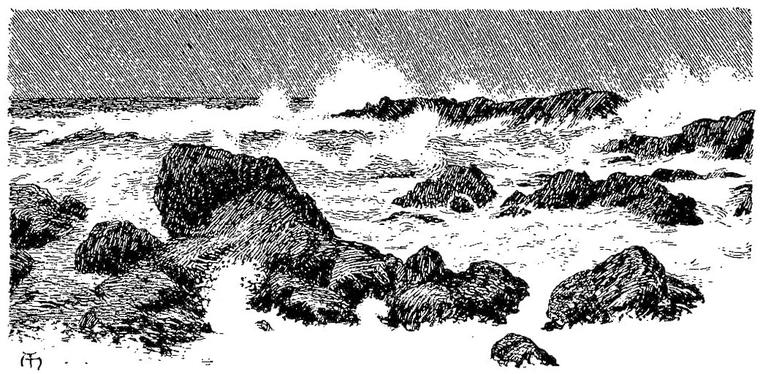

And the sighs that are born in him.”
HEINE.
One day, but not to weep:
The dreams remain; they only break
The mirror of the sleep.”
JEAN PAUL, Hesperus.
How I got through this dreary part of my travels, I do not know. I do not think I was upheld by the hope that any moment the light might break in upon me; for I scarcely thought about that. I went on with a dull endurance, varied by moments of uncontrollable sadness; for more and more the conviction grew upon me that I should never see the white lady again. It may seem strange that one with whom I had held so little communion should have so engrossed my thoughts; but benefits conferred awaken love in some minds, as surely as benefits received in others. Besides being delighted and proud that my songs had called the beautiful creature to life, the same fact caused me to feel a tenderness unspeakable for her, accompanied with a kind of feeling of property in her; for so the goblin Selfishness would reward the angel Love. When to all this is added, an overpowering sense of her beauty, and an unquestioning conviction that this was a true index to inward loveliness, it may be understood how it came to pass that my imagination filled my whole soul with the play of its own multitudinous colours and harmonies around the form which yet stood, a gracious marble radiance, in the midst of its white hall of phantasy. The time passed by unheeded; for my thoughts were busy. Perhaps this was also in part the cause of my needing no food, and never thinking how I should find any, during this subterraneous part of my travels. How long they endured I could not tell, for I had no means of measuring time; and when I looked back, there was such a discrepancy between the decisions of my imagination and my judgment, as to the length of time that had passed, that I was bewildered, and gave up all attempts to arrive at any conclusion on the point.
A gray mist continually gathered behind me. When I looked back towards the past, this mist was the medium through which my eyes had to strain for a vision of what had gone by; and the form of the white lady had receded into an unknown region. At length the country of rock began to close again around me, gradually and slowly narrowing, till I found myself walking in a gallery of rock once more, both sides of which I could touch with my outstretched hands. It narrowed yet, until I was forced to move carefully, in order to avoid striking against the projecting pieces of rock. The roof sank lower and lower, until I was compelled, first to stoop, and then to creep on my hands and knees. It recalled terrible dreams of childhood; but I was not much afraid, because I felt sure that this was my path, and my only hope of leaving Fairy Land, of which I was now almost weary.
At length, on getting past an abrupt turn in the passage, through which I had to force myself, I saw, a few yards ahead of me, the long-forgotten daylight shining through a small opening, to which the path, if path it could now be called, led me. With great difficulty I accomplished these last few yards, and came forth to the day. I stood on the shore of a wintry sea, with a wintry sun just a few feet above its horizon-edge. It was bare, and waste, and gray. Hundreds of hopeless waves rushed constantly shorewards, falling exhausted upon a beach of great loose stones, that seemed to stretch miles and miles in both directions. There was nothing for the eye but mingling shades of gray; nothing for the ear but the rush of the coming, the roar of the breaking, and the moan of the retreating wave. No rock lifted up a sheltering severity above the dreariness around; even that from which I had myself emerged rose scarcely a foot above the opening by which I had reached the dismal day, more dismal even than the tomb I had left. A cold, death-like wind swept across the shore, seeming to issue from a pale mouth of cloud upon the horizon. Sign of life was nowhere visible. I wandered over the stones, up and down the beach, a human imbodiment of the nature around me. The wind increased; its keen waves flowed through my soul; the foam rushed higher up the stones; a few dead stars began to gleam in the east; the sound of the waves grew louder and yet more despairing. A dark curtain of cloud was lifted up, and a pale blue rent shone between its foot and the edge of the sea, out from which rushed an icy storm of frozen wind, that tore the waters into spray as it passed, and flung the billows in raving heaps upon the desolate shore. I could bear it no longer.

“I will not be tortured to death,” I cried; “I will meet it half-way. The life within me is yet enough to bear me up to the face of Death, and then I die unconquered.”
Before it had grown so dark, I had observed, though without any particular interest, that on one part of the shore a low platform of rock seemed to run out far into the midst of the breaking waters.
Towards this I now went, scrambling over smooth stones, to which scarce even a particle of sea-weed clung; and having found it, I got on it, and followed its direction, as near as I could guess, out into the tumbling chaos. I could hardly keep my feet against the wind and sea. The waves repeatedly all but swept me off my path; but I kept on my way, till I reached the end of the low promontory, which, in the fall of the waves, rose a good many feet above the surface, and, in their rise, was covered with their waters. I stood one moment and gazed into the heaving abyss beneath me; then plunged headlong into the mounting wave below. A blessing, like the kiss of a mother, seemed to alight on my soul; a calm, deeper than that which accompanies a hope deferred, bathed my spirit. I sank far into the waters, and sought not to return. I felt as if once more the great arms of the beech-tree were around me, soothing me after the miseries I had passed through, and telling me, like a little sick child, that I should be better to-morrow. The waters of themselves lifted me, as with loving arms, to the surface. I breathed again, but did not unclose my eyes. I would not look on the wintry sea, and the pitiless gray sky. Thus I floated, till something gently touched me. It was a little boat floating beside me. How it came there I could not tell; but it rose and sank on the waters, and kept touching me in its fall, as if with a human will to let me know that help was by me. It was a little gay-coloured boat, seemingly covered with glistering scales like those of a fish, all of brilliant rainbow hues. I scrambled into it, and lay down in the bottom, with a sense of exquisite repose.
Then I drew over me a rich, heavy, purple cloth that was beside me; and, lying still, knew, by the sound of the waters, that my little bark was fleeting rapidly onwards. Finding, however, none of that stormy motion which the sea had manifested when I beheld it from the shore, I opened my eyes; and, looking first up, saw above me the deep violet sky of a warm southern night; and then, lifting my head, saw that I was sailing fast upon a summer sea, in the last border of a southern twilight. The aureole of the sun yet shot the extreme faint tips of its longest rays above the horizon-waves, and withdrew them not. It was a perpetual twilight. The stars, great and earnest, like children’s eyes, bent down lovingly towards the waters; and the reflected stars within seemed to float up, as if longing to meet their embraces. But when I looked down, a new wonder met my view. For, vaguely revealed beneath the wave, I floated above my whole Past. The fields of my childhood flitted by; the halls of my youthful labours; the streets of great cities where I had dwelt; and the assemblies of men and women wherein I had wearied myself seeking for rest. But so indistinct were the visions, that sometimes I thought I was sailing on a shallow sea, and that strange rocks and forests of sea-plants beguiled my eye, sufficiently to be transformed, by the magic of the phantasy, into well-known objects and regions. Yet, at times, a beloved form seemed to lie close beneath me in sleep; and the eyelids would tremble as if about to forsake the conscious eye; and the arms would heave upwards, as if in dreams they sought for a satisfying presence. But these motions might come only from the heaving of the waters between those forms and me. Soon I fell asleep, overcome with fatigue and delight. In dreams of unspeakable joy—of restored friendships; of revived embraces; of love which said it had never died; of faces that had vanished long ago, yet said with smiling lips that they knew nothing of the grave; of pardons implored, and granted with such bursting floods of love, that I was almost glad I had sinned—thus I passed through this wondrous twilight. I awoke with the feeling that I had been kissed and loved to my heart’s content; and found that my boat was floating motionless by the grassy shore of a little island.